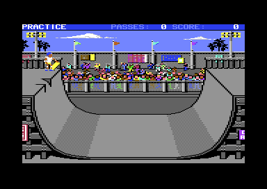

<meta charset="utf-8">
<meta name="viewport" content="width=device-width, initial-scale=1">
<title>Skate or Die!</title>
<link rel="preconnect" href="https://fonts.googleapis.com">
<link rel="stylesheet" href="https://fonts.googleapis.com/css2?family=Lato:wght@400;700;900&family=IBM+Plex+Mono:wght@400;500&display=swap">
<link rel="stylesheet" href="reference/sod-page.css">
<!-- tabs -->
<header class="hero">
  <p class="eyebrow">Commodore 64 · 1987 · Electronic Arts</p>
  <h1>Skate or Die!</h1>
  <p class="sub">The Freestyle ramp from the code: ten passes on High Jump's half-pipe, a trick chosen by how you pumped and leaned before the coping, and a bonus for variety.</p>
</header>
<main class="wrap" data-part="ramp">
<section id="event">
  <p class="fig">01 · The event</p>
  <h2 class="t">High Jump's ramp, scored for style</h2>
  <p>Freestyle uses the same half-pipe as <a href="highjump.html">High Jump</a>: the same picture, the same 158 poses and the same profile of 274 points that turns one number into a place on the ramp (<code>$2FA1</code>). Only the rules differ. The skater gets ten passes, and each pass over the coping is a chance at a trick worth points.</p>
  <figure class="sod-shot"><figcaption>The Freestyle ramp. Captured in an emulator from the copy studied here.</figcaption></figure>
  <p>The physics are simpler than High Jump's waggling. Speed gains the slope each frame (<code>$17D7</code>) and friction takes one unit a frame (<code>$1B7C</code>). Speed comes from pumps: the first fire press in each half of the ramp adds to it, but only if the skater is low in the curve when it comes (<code>$1BAF</code>). A press anywhere else wastes that half's pump.</p>
</section>
<section id="class">
  <p class="fig">02 · Choosing the trick</p>
  <h2 class="t">The trick is decided before the coping</h2>
  <p>The player does not pick a trick in the air. At the top of each wall the game picks a kind of trick from two things done on the way up: how many pumps counted, none, one or two, and whether the stick was last pushed left or right low in the ramp, with or against the direction of travel (<code>$1C56</code>, <code>$1C81</code>).</p>
  <div class="tablewrap"><table class="t">
    <tr><th>Lean</th><th>No pumps</th><th>One pump</th><th>Two pumps</th></tr>
    <tr><td>None</td><td>air</td><td>air</td><td>air</td></tr>
    <tr><td>Against travel</td><td>spin (class 5)</td><td>turn (class 4)</td><td>held trick (class 3)</td></tr>
    <tr><td>With travel</td><td>plant (class 2)</td><td>plant (class 2)</td><td>air for turns (class 1)</td></tr>
  </table></div>
  <p class="cap">The trick class chosen at the coping, as <code>$1C81</code> picks it, and the phase each class starts from the table at <code>$2E7E</code>. The names describe what each class does on screen; the game names none of them.</p>
</section>
<section id="air">
  <p class="fig">03 · Air</p>
  <h2 class="t">Half turns and grabs, priced from a table</h2>
  <p>In the air the stick spins the skater through sixteen poses (<code>$1B10</code>), and pushing against the spin stops it, but only on a half or whole turn (<code>$1AF9</code>). Fire in a forwards, backwards or side-on pose starts a grab, worth two points a frame while it is held (<code>$0FF2</code>). To score, the skater must land facing forwards or backwards, not spinning, and clear of the channel in the middle of the ramp (<code>$0FA0</code>); anything else is a fall.</p>
  <p>The points come from two tables. Plain air is priced by half turns and grabs together, from 25 up to 3,400 (<code>$325B</code>); a side-on grab counts as two. Class 1's air is priced by half turns alone: 100, 200, 400, 800 or 1,600 for none to four (<code>$32FB</code>). Neither table is guarded: five half turns, or sixteen grabs, would read past its end.</p>
</section>
<section id="plants">
  <p class="fig">04 · Plants and holds</p>
  <h2 class="t">Points for every frame held</h2>
  <p>The other classes are tricks at the coping, and most pay for how long they are held. The plant (<code>$103F</code>) is worth 200 points, then 2 a frame held, or 4 while drifting along the coping; turning out of it with left or right doubles the trick's score. The held trick of class 3 is worth 500 and then 5 a frame, and ends on fire or a push left or right. The turn of class 4 is a flat 300 with a drift across the ramp, and the spin of class 5 a flat 250.</p>
  <p>A trick's points reach the total only when the next pass starts (<code>$1957</code>), when they pop up beside the skater. They are doubled again if the skater set off from the left wall and has come back over the far side of the channel. The crowd cheers longer after bigger tricks (<code>$0B60</code>).</p>
</section>
<section id="falls">
  <p class="fig">05 · Falls and the end</p>
  <h2 class="t">Ten passes, then a bonus for variety</h2>
  <p>There are three ways to fall, each with its own sound: landing over the channel (<code>$1D0A</code>), riding off the side of the ramp (<code>$1D26</code>), or dropping below the coping during a grab or a held trick. A fall scores nothing, and fire sends the skater back to the platform. A fall after the tenth pass, or reaching the eleventh wall, ends the run.</p>
  <p>At the end the game counts the different kinds of trick landed, out of six: the two kinds of air and the four coping tricks, and adds a bonus for variety (<code>$3305</code>): nothing for none, then 500 for one kind, 1,000, 2,000, 4,000, 6,000 and 9,000 for all six. The closing animation is chosen by the total: under 2,500, under 10,000, or more (<code>$2F49</code>).</p>
  <p>The score goes to the event manager as six digits of BCD (<code>$1F99</code>), though the status line has room for only five (<code>$1CA8</code>). The manager prints all six on the results screen.</p>
</section>
</main>
